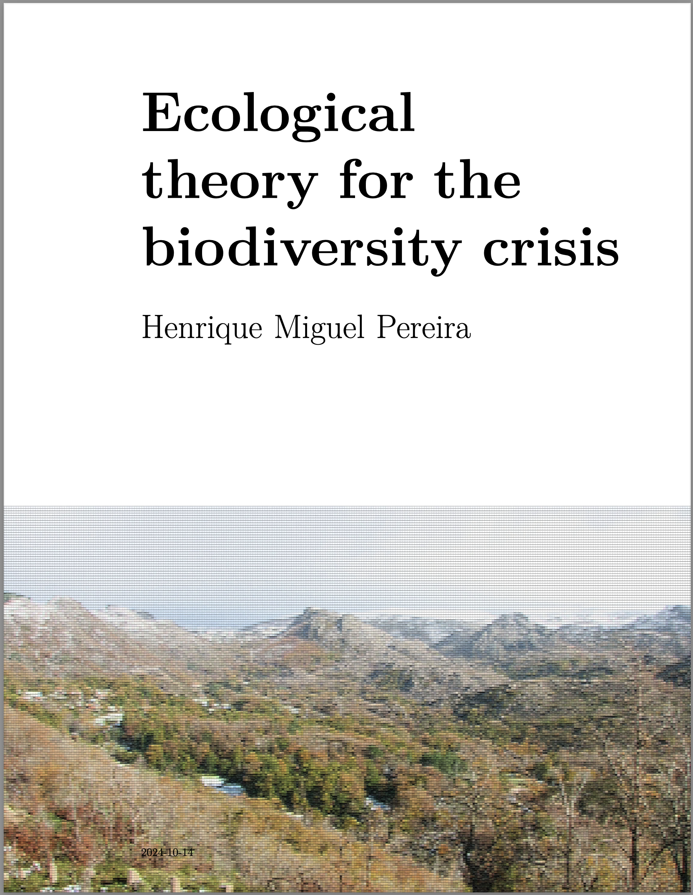

Ecological theory for the biodiversity crisis
Welcome

This is the website for “Ecological theory for the biodiversity crisis” book. This book teaches ecological theory with a hands-on approach using the R language. The ecological theory topics are often presented with an emphasis on their relevance for biodiversity conservation and management.
This book was created with the Quarto publishing system.
License
This website is (and will always be) free to use, and is licensed under the Creative Commons Attribution-NonCommercial-NoDerivs 4.0 License.
Preface
We live in the midst of the biodiversity crisis. Biodiversity science, at first mostly a spin off from Ecology, has developed tremendously in the last two decades, becoming a truly interdisciplinary field, with contributions from Geography, Economy, Social Sciences and many other disciplines. Big data and the development of statistical ecology has also been remarkable. As I write these lines, the Global Biodiversity Information Facility or GBIF (https://gbif.org) is about to hit 3 billion records. The availability of large amounts of data and the availability of the open source R software (https://www.r-project.org) has made statistical approaches take the main stage in much of ecological research. However, at the same time, as a biodiversity researcher, practitioner, and a teacher, I find again and again the need for a good understanding of ecological theory to be able to carry out my work. This book if for all of you that have also felt a similar need.
Programming and mathematics are key tools of ecological theory. The programming language I use in this book is R (version 4, available from https://www.r-project.org). If you have familiarly with programming in another computer language, a fast skimming of Appendix A will be enough to get you going with the book. If you are new to programming, I recommend you spend a few hours working through the short course in Appendix A, but you may also wanna consult some web resources (e.g. https://ourcodingclub.github.io/course). With the advent of Large Language Models (LLM) such as ChatGPT there may be the temptation to think programming knowledge will no longer be needed. I think LLMs will accelerate our writing of computer code, but they will not replace the need for being able to read and understand the code.
You may wonder why I chose R. There are plenty other programming languages out there, several suitable for ecological theory and modelling (e.g. data scientists love Pyhton). However, R has become the de facto language of ecologists with dozens of packages1 for a wide range of analysis, from camera trapping to species richness estimation. R has also powerful packages for spatial data analysis and can work as a Geographic Information System. So R, grew from a statistics software (the origins of R are the comercial S-PLUS) to a general purpose programming language with dedicated packages for different uses.
Why was R so successful, to the point of making some commercial software companies go out of business? R was open-source and free from its beginning, part of the free and open-source movement that gained popularity in the 1990’s, particularly with the development of the operating system Linux. Open-source means that the code behind R (R itself is a computer program written in C, Fortran, and other languages) is available for anyone to study. It also allows for anyone to contribute to improve the code in a collaborative way, including by contributing with packages. R is also free, meaning that anyone can download the software or any of its packages without any cost. Isn’t that a wonderful tool for science? Scientists dedicate their life to the pursue of knowledge, and the idea that someone has to pay for accessing that knowledge has always been a bit apocryphal. So R allowed scientists to share their research and code for free in an integrated platform. Another advantage of open-source software, is that we can in theory ran programs that we wrote decades ago by downloading archived versions of the software. At least in theory, the practice of code reproducibility in science is a bit more complex and requires careful data and code management by the researcher2. Platforms such as GitHub (https://github.com) for sharing code and Zenodo (https://zenodo.org) or Dryad (https://datadryad.org) for sharing data are a key component of reproducible science.
In contrast a lot of the code I wrote for my PhD was based on a commercial package (Mathematica) and anyone that wants to reuse it a couple decades later has to pay a few hundred Euros for the package (well there are student discounts) and has to find a version of the Mathematica that still runs this code. This latter problem can be insurmountable, as sometimes older versions of the software are no longer commercially available. One can argue that many programming languages are also free and public, however for ecological theory and modelling a high-level language like R provides a nice integrated platform for development and is literally priceless.
But programming is not enough. In order to be able to effectively develop theory and models of biodiversity, a good grasp of mathematics, including of probability and statistics is essential. One challenge is that, and this at least the case in Europe where I have lectured the most, most biology students receive very little mathematical training. This book cannot address by itself such gap and assumes some basic familiarity with probability theory (e.g. what is a probability distribution function), some calculus training (e.g. what area a derivative and an integral), a little algebra (e.g. multiplication of a matrix by a vector). I try to take the reader forward from that level. There are excellent books out there for those that need this basic background (e.g. Otto’s and Day’s A Biologist’s Guide to Mathematical Modelling). And Wikipedia (https://www.wikipedia.org) is often your best friend when you wanna a fast refresh of any mathematical concept or even for many of the models and ecological concepts presented in this book.
This book can be used as the support for a semester course in Ecological Theory or Ecological Modelling. I have used many of these materials over the last decade in a similar course at iDiv/University of Halle-Wittenberg. But the book can also be used as self-learning tool or even as a reference tool. This book takes a lot of inspiration from the Primer of Ecological Theory of Joan Roughgarden (the first two chapters draw heavily on her first chapters), that I was lucky to have as a mentor. As she used to say, one writes papers for the reviewers and books for the readers. This book is for you.
An R package is a set of functions developed by someone to extend the basic functionality of R.↩︎
For a guide on best practices for reproducible code see https://www.britishecologicalsociety.org/wp-content/uploads/2019/06/BES-Guide-Reproducible-Code-2019.pdf↩︎